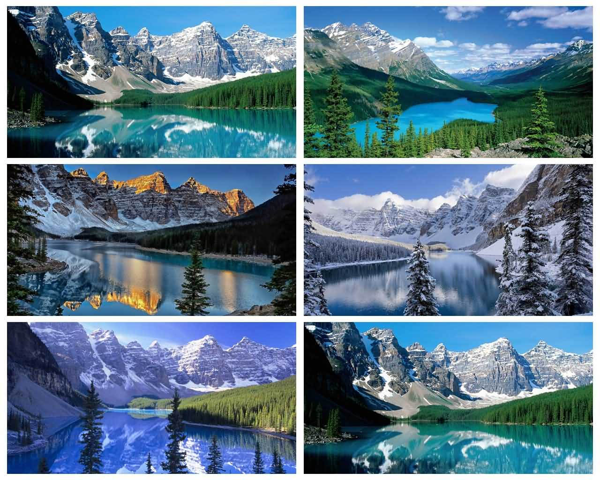

奥地利哈尔施塔特(Hallstatt) — — 漫游仙境小镇
人们常常会因为杂志中的一张绝美的风景图片，毅然决然地前往一探究竟。终于如愿到达目的地是，却发觉此景只于图画中，人间难得几回见，不禁有几分泄气。 不过，奥地利湖畔小镇哈尔施塔特是个例外，不经跻身联合国世界文化遗产名录(哈尔施塔特于1997年被联合国教科文组织列为世界文化遗产。这里的世界文化遗产博物馆的文物十分珍贵， 包括从原来的盐矿挖掘出的衣服及采盐工具、铁器时代的生活用具以及最早的蒸汽船模型等。)，还被权威地理杂志评为全球最美小镇，热的各国竞相模仿，纷纷推出山寨版的小镇风景
捷克克鲁姆洛夫(Cesky Krumlov) — — 摄影家的天堂

克鲁姆洛夫(Cesky Krumlov)被誉为世界上最美丽的小镇是当之无愧的。这个现在只有14100名居民的小镇坐落于捷克南部的波希米亚地区。位于伏尔塔瓦河的上游，距捷克首都布拉格约160公里。 该城在13世纪时由于其处于一条重要的贸易通道上而逐渐繁盛。 大部分建筑建于14世纪到17世纪之间，多为哥特式和巴洛克式风格。整个小镇被流经该处的马蹄铁形的、宽阔蜿蜒的伏尔塔瓦河环抱着， 而著名的城堡则建在河的对岸，风采依然。登高远眺，以城堡为中心的中世纪城市一望无边，令人惊叹。
在小镇的外围，你可以看到色调有点俗丽的古堡塔，这是镇上最高的建筑，也是克鲁姆洛夫最明显的坐标，它时仅次布拉格古堡的捷克第二大古堡。石板街、流水、桥堤构成了古镇的一切。 古镇的前世追溯可以到公元13世纪，庞大的古堡里记录着名门望族的灿烂事迹。说故事的人每隔2个小时便带着一批游客，踩着同样的步伐重复着同样的话语，几百年来留下的丰功伟绩和错综复杂的关系图表。 古堡是文艺复兴与洛可可艺术的结晶，内部装潢富丽堂皇，地板上躺着的大熊标本，展列室里的黄金马车，满墙的胜利旗帜和家族标记，都是诉不尽的千秋往事；古堡的花园是让人憩息的好地方， 登上古堡最高城塔整个小镇就在眼下，河岸四周的房屋，一律用橙黄色的屋瓦，屋顶曲线轻轻舒展，错落有致，中间便是高耸的教堂。1992年，联合国教科文组织宣布授予它“世界文化和自然双重遗产”的头衔。
加拿大班夫国家公园(Banff National Park)

班夫国家公园建于1885年，是加拿大历史最悠久的国家公园。它坐落于落基山脉北段，距加拿大阿尔伯塔省卡尔加里以西约110-180公里处。公园共占地6641平方公里，遍布冰川、冰原、松林和高山。 冰原公路从路易斯湖开始，一直连接到北部的贾斯珀国家公园。西面是省级森林和幽鹤国家公园，南面与库特尼国家公园毗邻，卡纳纳斯基斯镇位于其东南方。公园内主要的商业区为弓河山谷的班夫镇。 它作为“加拿大落基山脉自然公园群”的一部分，与其它加拿大落基山脉的国家和省立公园一起被列入世界遗产名录中。
加拿大班夫小镇(Banff National Park)
班夫（Banff）是加拿大班夫国家公园中最大的城镇，人口约1万人。它坐落于艾伯塔省西南落基山脉中。班夫距离卡尔加里市以西约135公里处，加拿大横贯公路旁。班夫往西58公里则是著名的路易斯湖。 班夫是著名的度假胜地，并且周围山峦与温泉也广受欢迎。它是重要的户外运动区，主要活动有步行、登山、滑雪等。 有许多著名的山峰亦坐落在小镇旁边，如：Mount Randle（2846米），Cascade Mountain 与Mount Norquay。硫磺山（Sulphur Mountain）是著名的景点——班夫上温泉(Banff Upper Hot Springs)和班夫温泉酒店的所在地。班夫有一年一度的班夫山地电影节。
云南丽江古城(The Old Town of Lijiang)
丽江古城，又名“大研古镇”，位于中国西南部云南省的丽江市，坐落在丽江坝中部，玉龙雪山下，与同为第二批国家历史文化名城的四川阆中、山西平遥、安徽歙县并称为“保存最为完好的四大古城”它是中国历史文化名城中唯一两个没有城墙的古城之一。
丽江古城始建于宋末元初（公元13世纪后期）。古城地处云贵高原，海拔2400余米，全城面积达3.8平方公里，自古就是远近闻名的集市和重镇。古城现有居民6200多户，25000余人。其中，纳西族占总人口70%以上，有30%的居民仍在从事以铜银器制作、 皮毛皮革、纺织、酿造业为主的传统手工业和商业活动
自丽江古城成功申遗之后。古城内的旅游业和商业得到了迅猛的发展.主要包括旅游、餐饮、住宿、商业、休闲娱乐、文化等各种业态。这些业态大致可以分为四类，即住宿(特色客栈)、餐饮(主题餐馆、特色餐厅)、购物(特色购物商店)和休闲娱乐(酒吧、咖啡馆、书吧等)。 从业态配比上来看，四类业态数盆相对均衡，没有占绝对乐倒性的业态类型。总体来看.住宿所占比重较大.达到了37%，其次是购物和餐饮，分别占25%和23%，最后是各种休闲娱乐类场所。